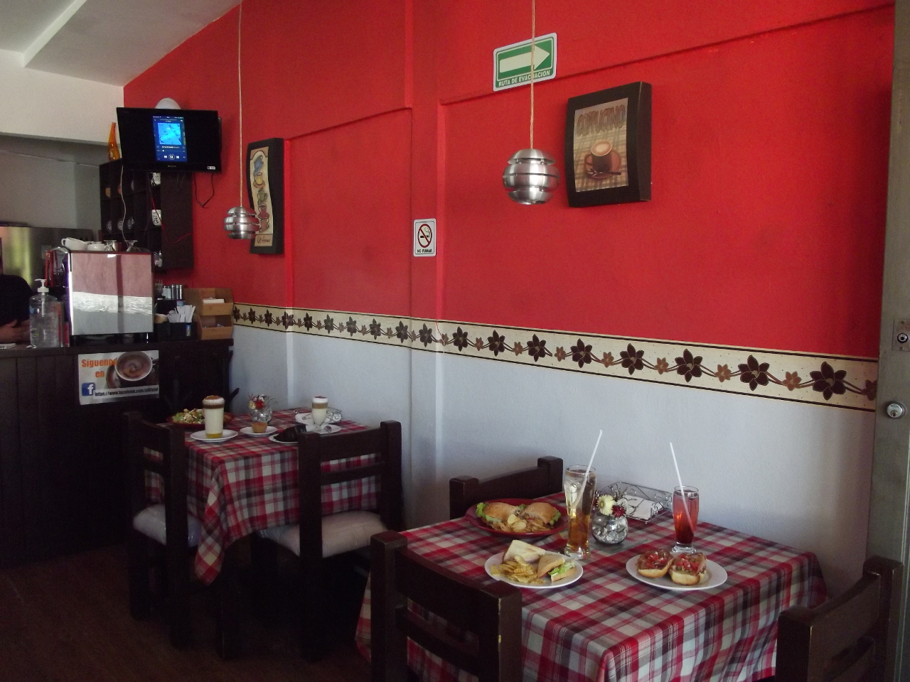

Nuesta Historia
El Kfetal nace en el año 2014 como un proyecto de negocio de Angélica y Arturo. Siendo amantes del café y acostumbrados a tomar una buena taza por las mañanas para iniciar el día, vieron la oportunidad de abrir el negocio pensando en el gusto de las personas que como ellos, inician su jornada laboral muy temprano.
Por el rumbo no existía ninguna opción para poder tomar un buen café o comprar un alimentosano y completo a esa hora (06:30 am, horario en el que el Kfetal abre sus puertas) a precios accesibles y con excelente calidad y pensando en cualquier tipo de presupuesto. En el mes de enero comenzaron los preparativos para buscar las herramientas para formar una cafetería que aunque chiquita, lleva un gran pedazo de esfuerzo y corazón impresos en todo lo que se ofrece y se hace para satisfacer el gusto de todos sus clientes.
Su lema, “NO SERVIR NADA QUE ELLOS NO COMERÍAN”
A punto de cumplir un año de apertura, los clientes que los frecuentan y los que apenas comienzan su gusto por visitarlos han hecho de “el Kfetal” un lugar de buena vibra, donde encontrarán productos de alta calidad y buenos precios, además de una sonrisa por parte de sus anfitriones.
Visión:
Ser la mejor opción dentro de la variedad de cafeterías de la zona, comercializando productos de la más alta calidad y ofreciendo el mejor servicio, creando un ambiente cordial y confortable para disfrutar de un buen café con la mejor compañía.
Misión:
Trabajar para mejorar las expectativas de nuestros clientes, entregando productos que satisfagan todos los gustos, contribuyendo a la diversidad de restaurantes y cafeterías de la zona.
Innovar constantemente con productos variados.
Entregar productos de la más alta calidad.
Desarrollar relaciones fuertes entre clientes, empleados y proveedores.
Agregar valor a todos nuestros productos y servicios.
